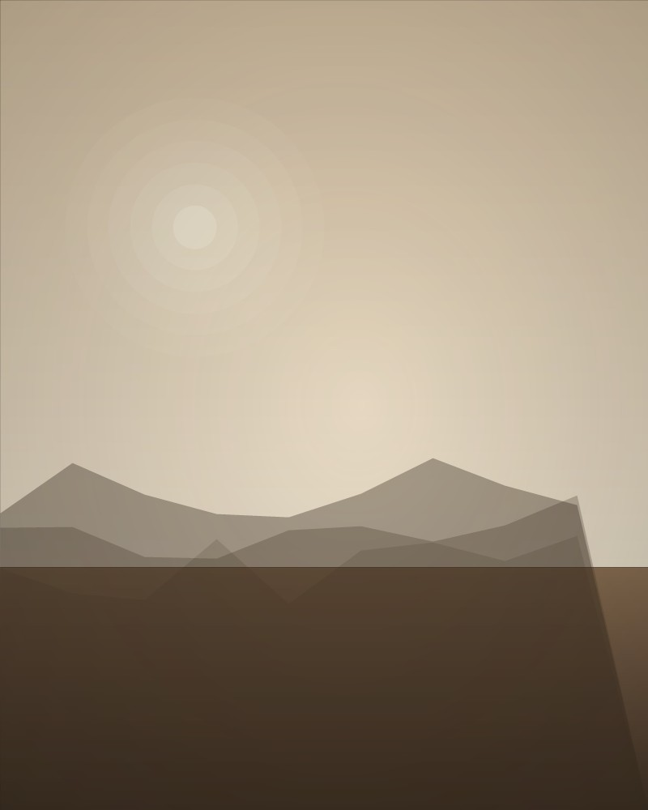
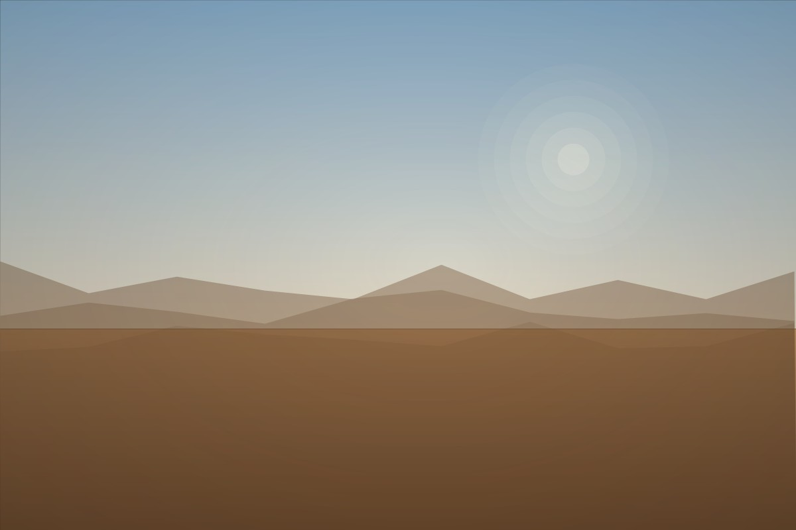
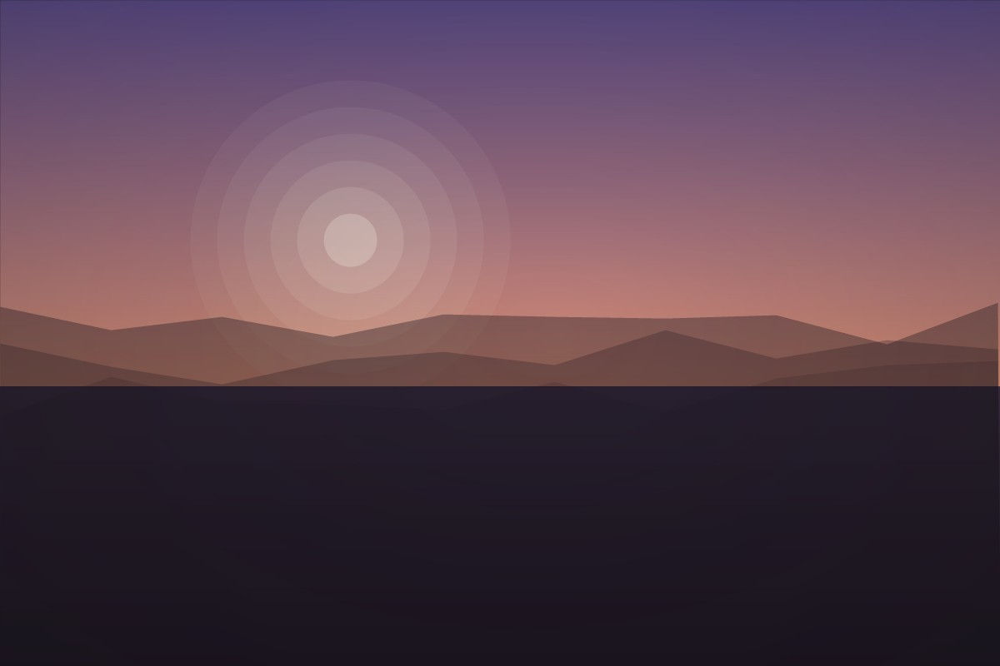
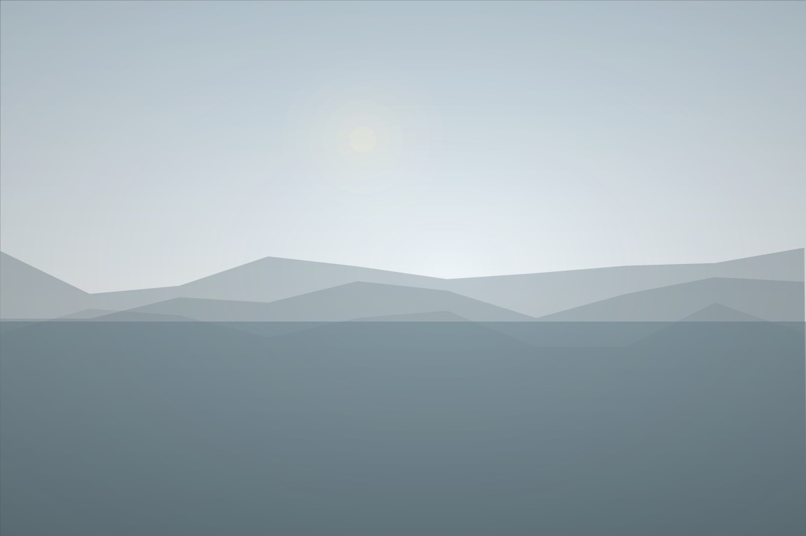

Waive
A web app that turns intimidating government notices into plain language and a clear next step. Built with three teammates in 36 hours.

Electrical Engineering · McGill University
I build things that sit between software and hardware — web apps, firmware, and small tools that make tedious work disappear.
I'm a second-year Electrical Engineering student who spends most of his time somewhere between a breadboard and a text editor.
I like problems where the answer has to actually work — where a thing either lights up or it doesn't. Most of what I build starts as a small annoyance I wanted to remove.
Off the clock I play varsity badminton, solve cubes faster than is strictly reasonable, and take a camera most places I go.
A web app that turns intimidating government notices into plain language and a clear next step. Built with three teammates in 36 hours.
A sublease marketplace with map-based discovery, auth, and listing management — for students who move twice a year.
An ESP-32 alarm clock — simulated in Wokwi, then soldered. Firmware, enclosure, and a snooze button that actually feels good to press.
A Chrome extension that screenshots scrolling pages and converts LaTeX into readable Unicode — including the malformed kind.
Built Waive, a privacy-first legal document intelligence engine that uses local AI to transform complex legal notices into actionable, ready-to-file responses in under 60 seconds.




